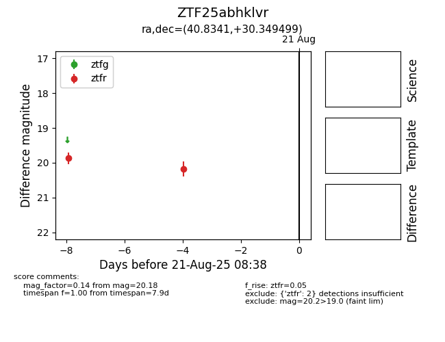

Target ZTF25abhklvr at 2025-08-21 08:38, see:
FINK: fink-portal.org/ZTF25abhklvr
Lasair: lasair-ztf.lsst.ac.uk/objects/ZTF25abhklvr
ALeRCE: alerce.online/object/ZTF25abhklvr
alt names
ZTF25abhklvr (ztf,alerce)
coordinates:
equatorial (ra, dec) = (40.8341,+30.34950)
galactic (l, b) = (149.8521,-26.60823)
photometry
last ztfr=20.18
2 ztfr detections
